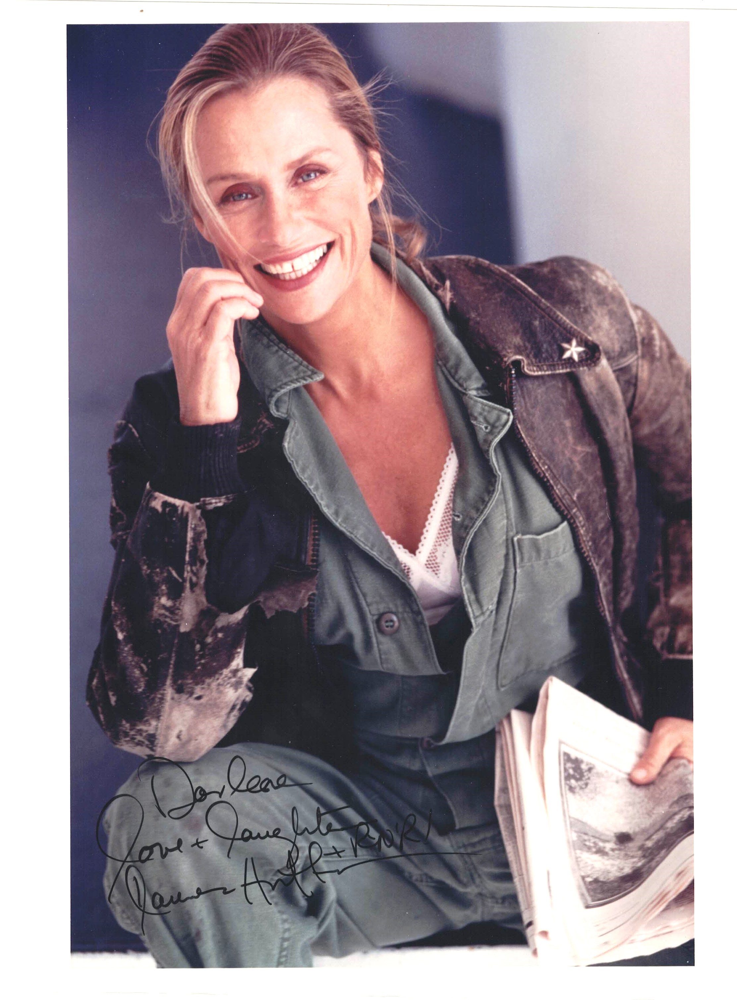

Product No. HEA-0236
$90
Shipping: $8.95
Description
Signed 8x10 color photograph. Inscribed.
Full Description
Lauren Hutton (born November 17, 1943) is an American model and actress who became one of the most recognizable fashion figures of the 1970s and later built a successful film and television career. Born Mary Laurence Hutton in Charleston, South Carolina, she moved to New York City and entered modeling in the 1960s. She became especially famous for her distinctive gap-toothed smile and for challenging traditional ideas of beauty in the fashion industry. In 1973, she signed a groundbreaking cosmetics contract with Revlon, one of the most lucrative modeling agreements of its time. Hutton appeared on the cover of Vogue numerous times and became a major influence on modern fashion modeling. As an actress, she appeared in films including The Gambler (1974), Gator (1976), American Gigolo (1980), and Once Bitten (1985). She also worked extensively in television. Hutton remained active in modeling well beyond the typical age range for fashion models, becoming an advocate for greater age diversity and natural beauty in the industry. She is regarded as one of the pioneering supermodels of the modern era.
Condition
Excellent condition.